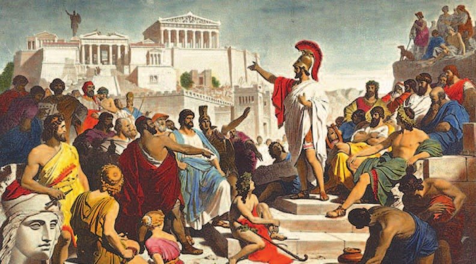
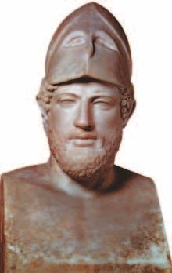
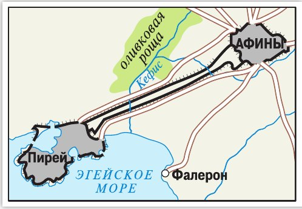

Возвышение Афин
Время, о котором этот параграф, связывают с именем . Его даже называют «веком Перикла».
Войны с персами (§28) принесли грекам не только горе и разрушения, но и богатство. Им досталась большая добыча и много пленных. Пленных делали рабами или отпускали за выкуп. Страна разбогатела и быстро восстановила хозяйство.
Афины стали сильной морской державой. Спартанцев от командования на море отстранили — во главе общего флота встали афинские .
Под их началом создали . В него вошли все полисы, которые воевали с персами на море.
Каждый полис союза давал корабли в общий флот и платил взносы в общую казну — на содержание армии. Но со временем Афины стали тратить эту казну так, как решат сами.
Родители в классе собирают деньги под одну задачу — на подарок учителю — и тратят их только на подарок. А тут общие деньги союза стали тратить на дела одного полиса.
Войны с Персией принесли Элладе не только жертвы и разрушения, но и значительные доходы. В руки греков попала богатая добыча и масса военнопленных, которых обращали в рабов или обменивали на выкуп. Это способствовало обогащению страны, быстрому восстановлению хозяйства.
Афины превратились в сильную морскую державу. Спартанцы были отстранены от командования на море, и во главе объединённого флота встали афинские стратеги. Под их руководством был создан Афинский морской союз, который объединил все полисы, боровшиеся с персами на море.
Полисы — члены союза должны были поставлять в союзный флот корабли и платить в общую казну взносы на содержание армии. Со временем правители Афин стали распоряжаться ей по своему усмотрению.
- С какими причинами было связано возвышение Афин после победы над Персией?
1. Откуда у Афин после войн взялись деньги? Найди два источника в разных абзацах.
2. Почему союзники могли быть недовольны Афинами? Свяжи этот раздел с подписью к схеме Длинных стен в разделе 3.
Развитие афинской демократии
Основы демократии в Афинах заложил Солон (§26). А дальше её двигал флот — главная военная сила Афин.
Гребцами на флоте служили в основном — бедняки, у которых было меньше прав, чем у других граждан (§26). После войн с персами феты получили право избираться на должности. Их голос в собрании стал много значить: ведь на них держался флот.
стало собираться чаще — три-четыре раза в месяц — и решало все важные дела. Вопросы для него готовил .
Любой гражданин мог предложить закон, выступить и убеждать других. Голосовали, только когда выслушают всех, — поднятием рук.
Главных начальников полиса — — выбирали на один год. В конце года они отчитывались о работе. На ту же должность второй раз не выбирали. Похоже на твоё дежурство: один день в неделю твой — потом очередь другого.
В суд — — каждый год выбирали 6 тысяч человек. За жизнь каждый афинский гражданин много раз бывал судьёй. В суде спорили две стороны, а судьи решали голосованием. Чаще всего наказывали штрафом в пользу государства.
Так в Афинах правил народ. Перикл называл это «народоправством» — по-гречески .
Основы демократии в Афинах заложил Солон, а её дальнейшее развитие было связано с главной военной силой — флотом. На флоте служили в основном феты, которые не имели таких же прав, как другие граждане полиса. Но после окончания Греко-персидских войн феты получили право избираться на государственные должности. Их голос в Народном собрании приобрёл большой вес.
Возросла роль самого Народного собрания. Оно стало собираться чаще — три-четыре раза в месяц. Собрание обсуждало и принимало решения по всем важным вопросам. Их готовил для обсуждения Совет пятисот.
Каждый гражданин мог внести проект закона, выступить, отстаивать свою точку зрения, убеждать присутствующих в своей правоте. К голосованию приступали, когда все мнения были выслушаны. Голосование по законам проходило поднятием рук.
На Народном собрании выбирали высших должностных лиц — магистратов — сроком на один год. По окончании этого срока заслушивали отчёт о проделанной ими работе. Дважды на одну и ту же должность граждане не избирались.
В гелиэю ежегодно избирали 6 тысяч человек. Каждый гражданин в Афинах в течение жизни многократно выполнял высшие судебные функции. Судебный процесс был построен на основе состязательного принципа: судьи выносили приговор голосованием. Обычной мерой наказания был штраф в пользу государства, размер которого часто устанавливался в суде.
- Как участие разных групп жителей Афин в Греко-персидских войнах повлияло на развитие демократии в полисе?
3. Сравни Народное собрание при Солоне (§26) и при Перикле. Что изменилось?
4. Магистраты служили всего год и потом отчитывались. Чем такой порядок мешал им стать тиранами, как Писистрат (§26)?

Перикл — человек и политик
Перикл был из знатного, аристократического рода. Умный, красноречивый, хороший политик и полководец — он стал вождём афинского народа. За спокойствие в любой беде его прозвали Олимпийцем — как богов с Олимпа (§21).
Стратегом его выбирали много раз, впервые — в 463 году до н. э. Первый стратег не только командовал армией и флотом, но и решал все дела полиса — и внутри, и с соседями.
Перикл ввёл плату за должности. Зачем? Бедняк, который занят делами полиса, не может работать на своём участке. Теперь ему платили, и о еде можно было не думать. Немного похоже на твои карманные: полис платил гражданину за то, что он трудится для всех.
При Перикле в Афинах много строили. Заново отстроили , который разрушили персы Ксеркса (§28). Бедняки получили работу на стройке за плату. Город украшали статуями и красивыми зданиями — об этом весь следующий параграф.
От Афин до порта построили . Они тянулись примерно на 6 километров — это как семь с половиной раз дойти от подъезда до метро. Деньги на храмы и стены Перикл брал из казны морского союза.
Перикл всю жизнь служил народу. Он не терпел несправедливости, и подкупить его было невозможно. Зазнавшихся афинян он успокаивал, а испуганным придавал смелости.
Расцвет демократии в Афинах связан с именем Перикла. Он происходил из аристократического рода. Благодаря уму, владению ораторским искусством (красноречием), таланту политика и полководца этот человек стал лидером афинского народа.
Перикл избирался стратегом много раз в течение своей жизни (впервые — в 463 году до н. э.). В обязанности первого стратега входило не только командование армией и флотом. Он решал все вопросы внешней политики и внутренней жизни полиса. Чтобы привлечь простых граждан к активной политической деятельности, Перикл ввёл плату за исполнение должностей в полисе. Теперь гражданину, занятому государственными делами, не нужно было заботиться о пропитании.
При Перикле в Афинах развернулось большое строительство. В частности, заново отстроили афинский Акрополь, разрушенный во время похода Ксеркса. Бедняки получили возможность за плату трудиться на строительных работах. Кроме строительства, Перикл выделял большие средства на украшение города статуями и зданиями.
Свою жизнь Перикл посвятил служению народу. Он осуждал несправедливость и прослыл среди сограждан неподкупным; замечая в афинянах заносчивость, усмирял их; когда видел необоснованный страх, внушал людям отвагу.

▲ Рассмотри схему афинских Длинных стен. Подумай, для чего их построили.
- Какие изменения произошли в Афинах при Перикле?
5. Феты получили право избираться (раздел 2). Почему без платы Перикла это право мало что давало бедняку?
6. Стройка на Акрополе помогала не только красоте города. Кому ещё и чем?
7. Почему Перикла прозвали Олимпийцем? Найди черты характера в подписи к картине и в последнем абзаце.
Подведём итоги
- Какие события и как повлияли на развитие афинской демократии?
- Как ты понимаешь выражение «век Перикла»?
- Как создание мощного флота повлияло на возвышение Афин?
- Рассмотри схему афинских Длинных стен. Подумай, для чего их построили.
Прочитай отрывок из «Надгробной речи Перикла», которую записал древнегреческий историк Фукидид, и ответь на вопросы.
…Для нашего государственного устройства мы не взяли за образец никаких чужеземных установлений. Напротив, мы скорее сами являем пример другим, нежели в чём-нибудь подражаем кому-либо. И так как у нас городом управляет не горстка людей, а большинство народа, то наш государственный строй называется народоправством (демократией). В частных делах все пользуются одинаковыми правами по законам. Что же до дел государственных, то на почётные государственные должности выдвигают каждого по достоинству, поскольку он чем-нибудь отличился не в силу принадлежности к определённому сословию, но из-за личной доблести. Бедность и тёмное происхождение или низкое общественное положение не мешают человеку занять почётную должность, если он способен оказать услуги государству. В нашем государстве мы живём свободно… в общественной жизни не нарушаем законов, главным образом из уважения к ним, и повинуемся властям и законам, особенно установленным в защиту обижаемых, а также законам неписаным, нарушение которых все считают постыдным.
Сформулируй ответ на главный вопрос параграфа — почему Перикл считал, что Афины — это школа всей Эллады? Приведи два-три довода.
Проверь себя
Нажимай по очереди — от самого древнего к самому близкому к нам. Тут есть и §26, и §28.
1. Какой полис стал главной морской державой Греции после войн с персами?
2. Что давали полисы — члены морского союза?
3. Как голосовали по законам в Народном собрании Афин?
4. На какой срок выбирали магистратов?
5. Зачем Перикл ввёл плату за должности?
6. Что соединили Длинные стены?
Расскажи вслух
Как возвысились Афины
- После войн с персами — добыча и пленные, страна разбогатела.
- Афины — морская держава: спартанцев отстранили, флот возглавили афинские стратеги.
- Афинский морской союз: корабли и взносы в общую казну, которой Афины стали распоряжаться сами.
Как работала афинская демократия
- Феты служили на флоте и получили право избираться на должности.
- Народное собрание 3—4 раза в месяц; вопросы готовит Совет пятисот; любой может предложить закон; голосуют руками.
- Магистраты на один год с отчётом, второй раз нельзя; гелиэя — 6 тысяч судей.
Перикл
- Аристократ, оратор и полководец; прозвище Олимпиец; стратег много раз, впервые в 463 году до н. э.
- Плата за должности — чтобы и бедняк мог служить полису.
- Стройка: Акрополь заново, статуи, Длинные стены до Пирея — на деньги морского союза.
Главный вопрос: почему Афины — «школа всей Эллады»
- Управляет большинство народа, должности — по достоинству, а не по богатству (речь Перикла).
- Законы защищают всех, особенно обижаемых; граждане уважают законы.
- Афины — самый сильный и красивый полис: флот, Акрополь, статуи. С них берут пример.